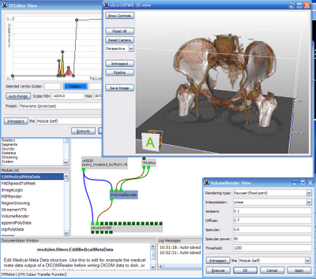

DeVIDE (april 2009)
A Python-based dataflow application builder that enables the rapid prototyping of medical visualization and image processing applications via visual programming.
ProjectsDeVIDEGallery - TU Delft Visualisation Website
